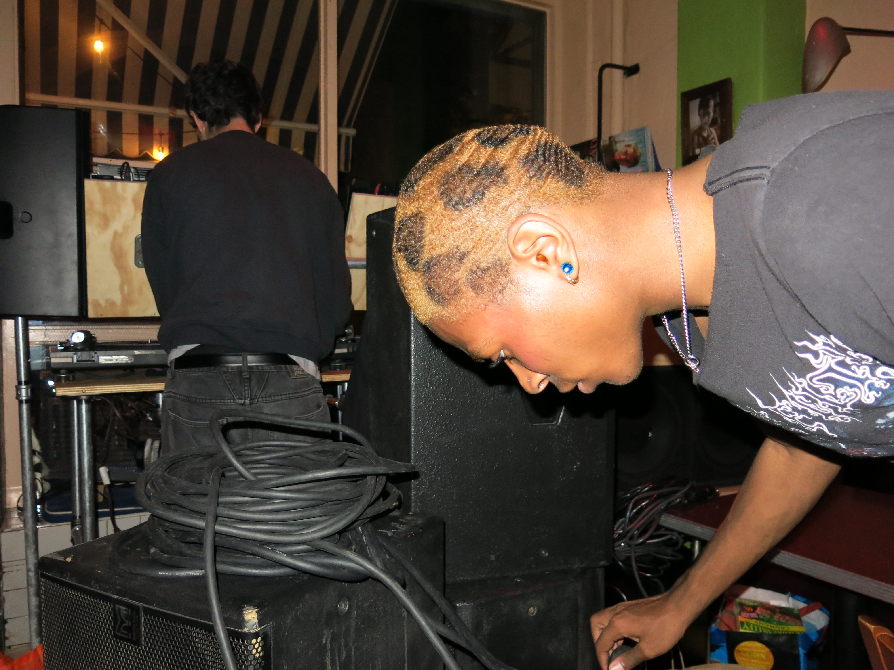
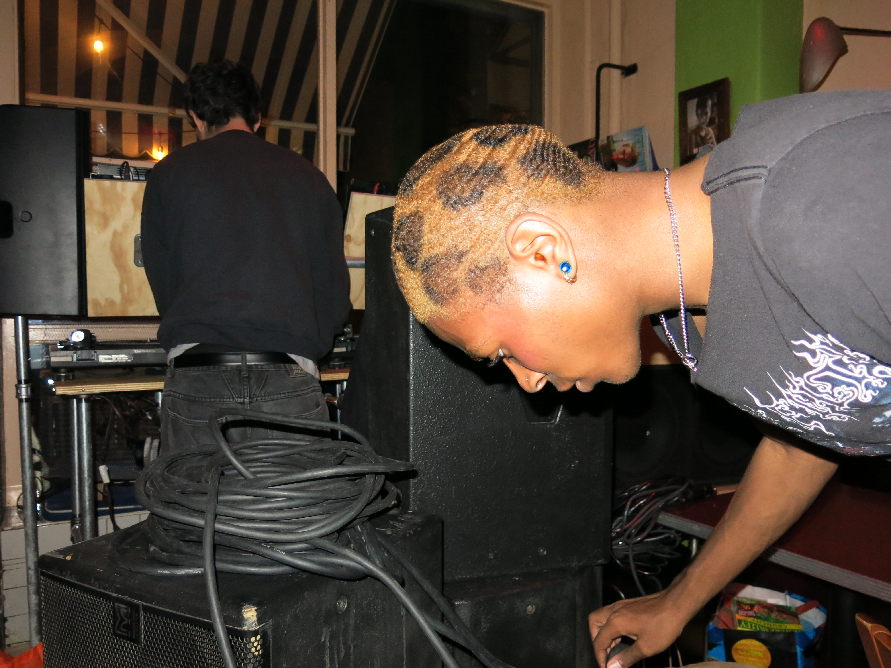

Join us for A Party’s first event on halloween to witness 98dots, Plushie, and our residents tear up Nolita’s quaint Café Gitane on our new soundsystem. As soon as the plates are cleared, we will bring in our setup, tuned to quench our thirst for the high-resolution audio and feel-it-in-your-chest bass we fell in love with working at London's Venue MOT and the UK's underground rave and festival circuit.
This party series will take full advantage of our soundsystems, with top-quality audio as our priority in any and every space where we dance. By focusing on local and under the radar artists, residencies, back-to-backs, and long sets, we hope to create a space that encourages the best and most unexpected sides of the artists we book.
We open with Brooklyn’s Plushie, who has a penchant for all corners of dance music, from psychedelic and wiggly to razor-sharp beat science, heart-melting deep cuts, and everything in between. She is also the co-founder of a—z.radio, a mix series and digital archive of music-related design, writing, and visual art.
98dots is a Tbilisi-born, Brooklyn-based DJ and promoter. His sets cover a wide range of genres, incorporating ambient, abstract, and experimental elements furnished with whirlwind acid inflections. Staying true to our transatlantic roots, he regularly plays on both sides of “the pond,” including Basement, Public Records, Bassiani, Pickle Factory, and Post Bar Helsinki. We were lucky enough to meet him while running sound at London’s infamous Creatures rave for Mutant Radio Tbilisi’s takeover and as one of the first NYC DJs we fell in love with.
Silly, sexy, indulgent, all-vinyl UK party vibes will finish off the night in true A Party style, with appearances from our residents sharing the fruits of our summer’s international record plundering. Forays into Dutch and UK hard house, circuity pumpers, wonkiness of all sorts and a love affair with vocals and acid will mark the night's close.
A Party is a queer(ish)-ran event with a zero-tolerance policy for homophobia, transphobia, racial prejudice, and any other forms of discrimination.